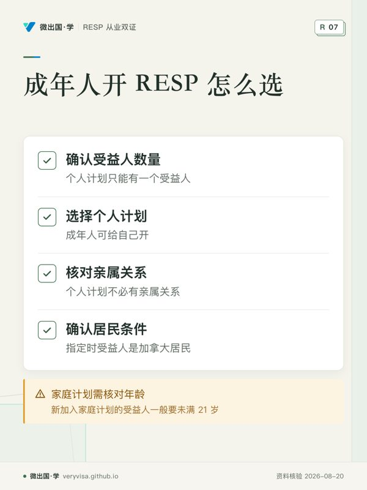
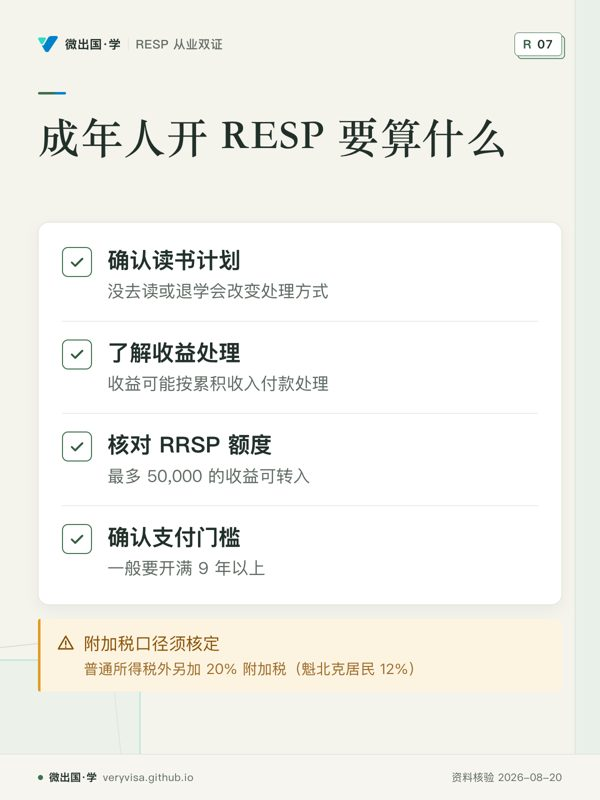

两个场景，同一个问题。
罗阿姨的外孙今年 19 岁，在社区学院读第一年。她最近才听说 RESP，想给外孙开一个，「补一点教育金」。另一位读者小邱，32 岁，打算两年后辞职读一个全日制的硕士，他问：「我能给自己开 RESP 吗？」
答案是：都能开，但它能带来的东西，和给小孩开完全不同。
成年人能不能开：能，但要选对计划
政府页面写得很直接：成年人也可以给自己开 RESP。来源 个人计划只能有一个受益人，受益人不必和开户人有亲属关系。来源 所以外婆给成年外孙开、朋友之间互开、自己给自己开，走的都是个人计划。
家庭计划不行：新加入家庭计划的受益人一般要未满 21 岁。来源 受益人本身的条件和小孩一样：开户前把受益人的 SIN 交给机构，指定时受益人是加拿大居民。来源
没有了什么：基本补助
联邦基本补助只付到受益人 17 岁那年年底。来源 18 岁以上开的 RESP，存多少都不配补助；BC 省的 1,200、魁北克的 QESI 也都有年龄限制，成年人拿不到。
这是给小孩开 RESP 最大的一块吸引力。没了它，成年人开 RESP 的理由只剩两个：学习债券，和延税。
还剩什么（一）：学习债券，21 岁前
学习债券（CLB）给 2004 年及以后出生、家庭收入曾在线下的孩子，首个合格年度 500，之后每年 100，最多 2,000，累积到 15 岁为止，不需要供款。来源
关键在申请期：受益人满 18 岁后，可以在 21 岁生日前一天之前自己申请，包括自己开一个 RESP 来接这笔钱。来源 已经宣布：自 2028 年 4 月起，追溯申请的年龄上限延长到 30 岁。来源
罗阿姨的外孙 19 岁，2007 年出生。他小时候家里有几年收入不高，他们家当年领 CCB，很可能符合学习债券的条件。对他来说，开 RESP 最实际的收益不是外婆存的钱，而是这笔可能高达 2,000 的学习债券——前提是在他 21 岁生日前一天之前申请。开户时让机构查一下他在 ESDC 系统里的学习债券资格。
还剩什么（二）：延税，值不值
RESP 的供款不能抵税；收益留在账户里不计税；本金可以免税退回。来源 学生读书时取出的教育援助金（补助加收益部分）计入学生的收入。来源
对成年人，延税只在收益可观时才有意义，而这有两个前提：钱要在账户里放足够多年，且受益人读书那几年收入低。小邱两年后读书，两年的收益本来就不多；他读硕士期间没有工资，收益作为教育援助金取出、计在他自己名下，几乎不交税——延税的好处存在，但量级很小。
不读书的代价，成年人更要算清
给自己开 RESP 最大的风险，是计划变了：没去读、读了一学期就退学。这时本金可以免税领回，但收益如果不能作为教育援助金取出，就要按「累积收入付款」（AIP）处理：除了普通所得税，另加 20% 附加税（魁北克居民 12%）。来源 开户人有 RRSP 额度的，可以把最多 50,000 的收益转入自己（或配偶）的 RRSP 来避开附加税。来源
而且 AIP 本身有门槛：计划一般要开满 9 年以上，且所有受益人满 21 岁、不在读，才可以支付。来源 开户不到几年就放弃读书的，收益可能要在账户里等，或者按其他方式处理。
和 TFSA 放在一起比
对一个 18 岁以上、拿不到补助的人来说，RESP 真正的对手是免税储蓄账户（TFSA）。TFSA 2026 年的额度是 7,000，收益免税、取出不计收入，也不管你拿去读书还是做别的。来源
粗略的比较是：
- 有学习债券可拿的（21 岁前、家庭收入曾在线下），开 RESP，这笔钱只有 RESP 能接；
- 没有学习债券、TFSA 额度还有富余的，TFSA 通常更灵活，不用担心「不读书」时的附加税；
- TFSA 额度已经用满、而且读书计划很确定、收益期较长的，RESP 的延税才有补充价值。
各种账户的对比见税务站的 RRSP、TFSA、FHSA 比较。
两个人后来怎么做的
罗阿姨在外孙所在的城市，陪他去一家提供学习债券的机构开了个人计划，由外孙自己当受益人。机构查到他符合学习债券资格，申请后进账了一笔。外婆没有再往里存大额，打算每学期直接资助外孙的生活费。
小邱查了自己的 TFSA，发现还有两万多额度，就没开 RESP，把读书的钱放在了 TFSA 里。
另一种常见情况：孩子过了 17 岁，家长才想起来
还有一类家庭，孩子 18、19 岁，家长突然想「给孩子补一个 RESP」，理由是「上大学要用钱」。这时候要算清楚：往新开的 RESP 里存钱，没有任何补助；存进去的钱将来本金免税退回，收益作为教育援助金算孩子的收入。如果孩子一两年后就要用这笔钱，延税带来的好处很少，还多了开户、取款的手续。
更实际的做法通常是：
- 先看有没有学习债券可拿。 孩子 21 岁前自己申请，这是唯一能「白拿」的部分。
- 看孩子已有的 RESP。 很多孩子小时候其实开过户（父母、祖父母、甚至以前的集团计划），只是家长忘了。查一下孩子名下有没有旧账户，比新开一个有用得多。
- 把钱直接用于学费与生活费。 孩子自己的学费抵免会在他报税时体现，这部分不依赖 RESP。
自己读书的成年人：再想一步
像小邱这样打算自己读书的成年人，还有一个替代方案值得了解：在 RRSP 里有额度的，终身学习计划（LLP）允许从 RRSP 里暂时取钱读书，之后分年还回去。它的具体额度与还款规则以 CRA 为准，本页不展开。TFSA、RRSP、FHSA 各有用途，放在一起比较见税务站的账户对比。
对这类读者，RESP 是一个「能用但通常不是最优」的工具：没有补助，灵活性不如 TFSA，读书计划一变还有附加税。除非有学习债券可拿，或者 TFSA、RRSP 都已用满、读书计划很确定，否则不必为了「给自己存教育金」专门开一个 RESP。
带走这张清单
- 受益人 21 岁前、家里曾经收入不高：先查学习债券资格，这是成年人开 RESP 最实际的理由。
- 成年人只能用个人计划；受益人要有 SIN、是加拿大居民。
- 18 岁以上存进去的钱没有补助，只剩延税。
- 读书计划不确定的，先算清不读书时收益的附加税。
- 与 TFSA 对比：额度有富余时，TFSA 往往更灵活。
- 2028 年 4 月起学习债券的申请年龄拟延到 30 岁，届时以官方公布为准。
从业者要多知道的
成年人或成年子女来开户，先问年龄、出生年与家庭收入史，判断学习债券的可能；再问读书计划有多确定、TFSA 额度是否已用。不要把「延税」讲成「免税」，不读书时的附加税与 AIP 的门槛要讲在前面（见信息披露与费用、KYC 与从业行为）。
来源
- canada.ca，RESP 概览：https://www.canada.ca/en/services/benefits/education/education-savings/resp.html
- canada.ca，开 RESP 的步骤：https://www.canada.ca/en/services/benefits/education/education-savings/opening-plan.html
- CRA，指定受益人：https://www.canada.ca/en/revenue-agency/services/tax/individuals/topics/registered-education-savings-plans-resps/who-become-a-beneficiary.html
- canada.ca，RESP 能加多少钱：https://www.canada.ca/en/services/benefits/education/education-savings/estimating-amounts.html
- canada.ca，加拿大学习债券：https://www.canada.ca/en/services/benefits/education/education-savings/canada-learning-bond.html
- CRA，RESP 如何运作：https://www.canada.ca/en/revenue-agency/services/tax/individuals/topics/registered-education-savings-plans-resps/resp-works.html
- CRA，RESP 付款、转移与滚存：https://www.canada.ca/en/revenue-agency/services/tax/individuals/topics/registered-education-savings-plans-resps/payments-resp.html
- CRA，RRSP、TFSA 等额度：https://www.canada.ca/en/revenue-agency/services/tax/registered-plans-administrators/pspa/mp-rrsp-dpsp-tfsa-limits-ympe.html
本页是一般性说明，不替你做税务或投资决定；个案以 ESDC、CRA 的核定和持牌专业人士的意见为准。
听、看、翻：已经 18 岁以上还能开吗
制作中
制作中
制作中
本页知识卡
不看正文也能拿到这一节的核心内容：先看导读，再看图。点图放大，左右翻页。

- 先看先看计划类型，个人计划与家庭计划规则不同。
- 易漏成年人可开户，但不同计划的受益人条件不同，签前需核对。
- 下一步去看讲解，带计划选择问题找持牌专业人士。

- 先看先看收益处理这一格，判断风险在哪里。
- 易漏是否满足支付条件会影响收益取出方式，需按情况核定。
- 下一步去看知识卡，整理个人情况找持牌专业人士。